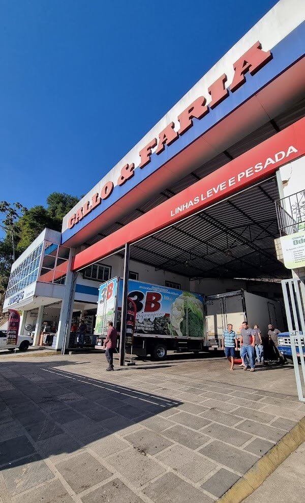
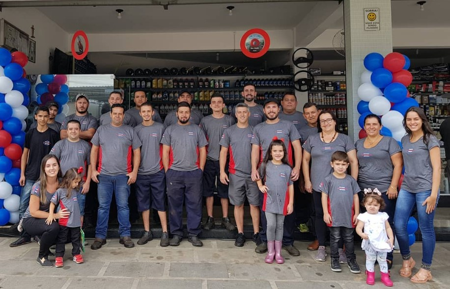

Sobre nós
Gallo e Faria: um nome de confiança
Com 23 anos de experiência, a Gallo e Faria oferece o melhor serviço de reparo da região com selo de qualidade no atendimento. Nossa maior prioridade é a relação com o cliente!

23 Anos deexperiência

Venha nos visitar!
Ao longo dos 23 anos de trabalho, nos tornamos a maior e mais bem equipada Autopeças e Mecânica da região. Venha ter sua experiência conosco!
Teresópolis
Bonsucesso
 Rua Dr. Rogério de
Moura Estevão - próximo ao corpo de bombeiros
Rua Dr. Rogério de
Moura Estevão - próximo ao corpo de bombeiros (21)99495-0814
(21)99495-0814 - Seg-Sex:
08:00 - 18:00Sáb: 08:00 - 12:00
nossos serviços
Temos profunda experiência trabalhando com qualquer tipo de veículo. Atendemos linha pesada, pickups diesel, carros de passeio e utilitários.
- Diagnóstico
 Manutenção
Manutenção- Freio
 Motor
Motor- Exaustão
- Aquecimento e resfriamento
- Troca de óleo
- Partida
- Direção e Suspensão